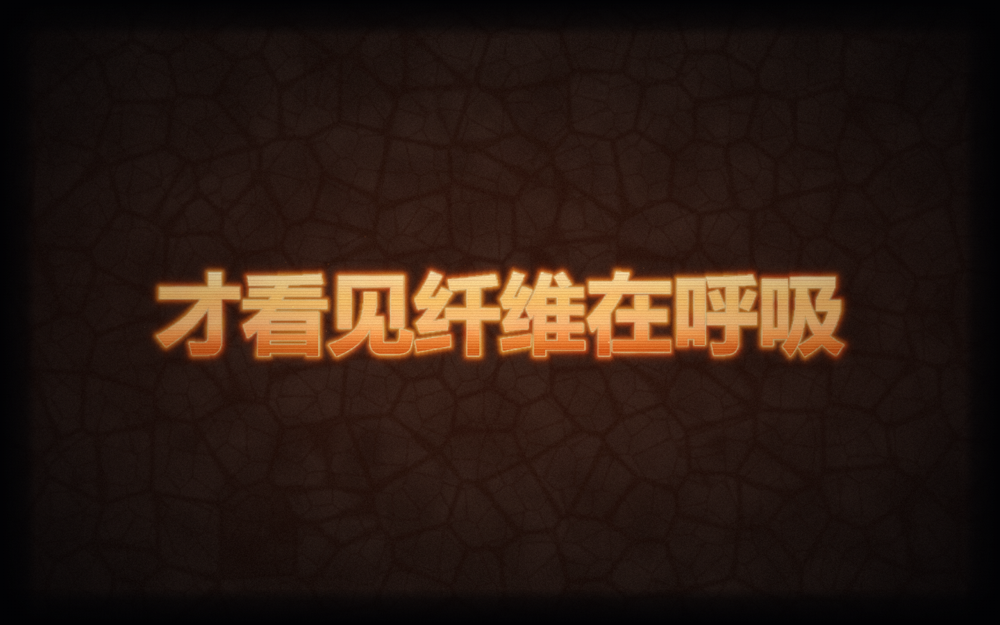
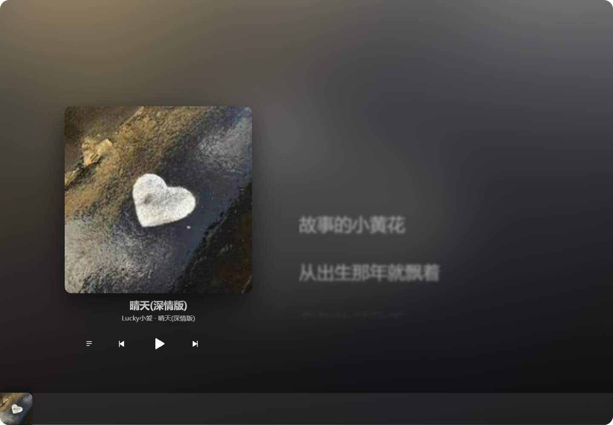
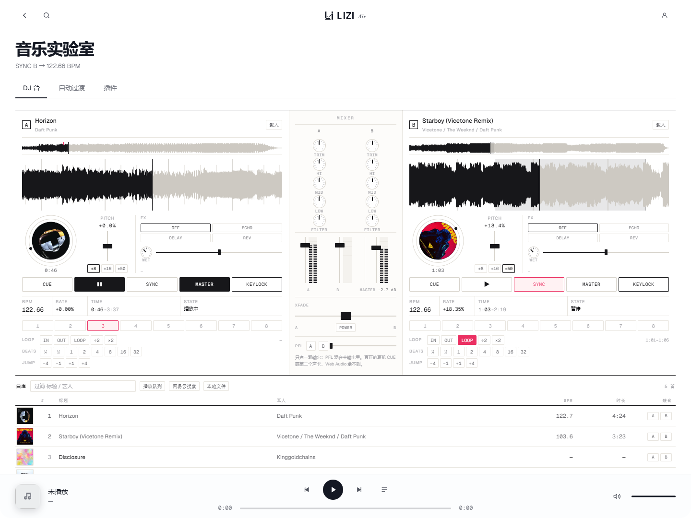
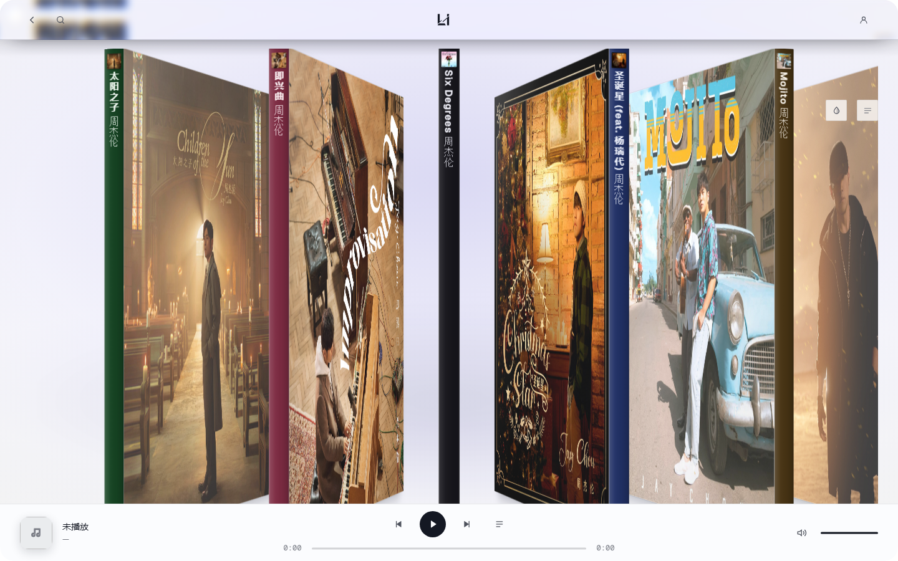

把一句歌词
拆成 235 种形态
每个形态都是独立写的作品，共用同一份频谱与节拍时钟。切形态不重载音频。

三个窗口
播放页、碟机、我的专辑。全部是真实截图，没有画出来的假界面。



它到底有什么
六件事，都在同一个窗口里，不用来回切。
- 01235 个歌词形态WebGL / Canvas
粒子聚字、液态金属、极光、等高线，也有纯 CSS 的翻页牌与加载动画。
- 02六路音源6 个边车
网易云 / QQ / 酷狗 / 汽水 / 波点 / Spotify。边车按需拉起，死了自动重起，全部只绑 127.0.0.1。
- 03DJ 台对标 Mixxx
双 deck、搓碟转盘、keylock 变速不变调、拍网格与 SYNC、loop 与 beatjump、热键 1–8。
- 04音效7 段
七段 EQ、十套预设，加一个照 Pro-Q 4 交互做的高级模式：可拖节点、滚轮改 Q。
- 05歌手页 / 专辑页访问栈
艺人名点进去是头像、统计、热门十首、专辑墙；专辑页整页只有一张 380px 封面。
- 06歌单搬运打分匹配
逐首在目标平台搜索，按歌名 / 歌手 / 时长打分，0.86 以上自动搬，其余列出来让你挑。
规格
诚实版，包括做不到的那几条。
- 版本
- 1.0.0
- 安装包
- 111.5 MB（含 6 个音源边车的依赖）
- 平台
- Windows 10 / 11 · x64
- 运行时
- Electron 33.4.11 · 主服务零依赖 Node
- 形态
- 235 个（另有 1 个「传统播放器」不计入）
- 网络
- 全部服务只绑 127.0.0.1，端口以
.port为准 - 已知限制
- 汽水 / 波点需要系统 Node ≥ 24；酷狗匿名播放会被风控挡
先装上，
再说话。
111.5 MB，一次装完。装完扫码登录你的网易云，歌单就来了。
下载 LIZI Air 1.0.0 111.5 MB安装包没有代码签名，Windows 首次运行会提示「未知发布者」，点「更多信息 → 仍要运行」。
所有数据都在本机：不上传歌单，不上传登录凭据。